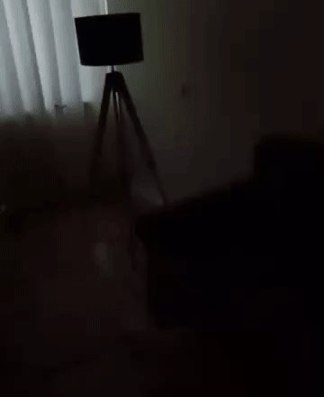
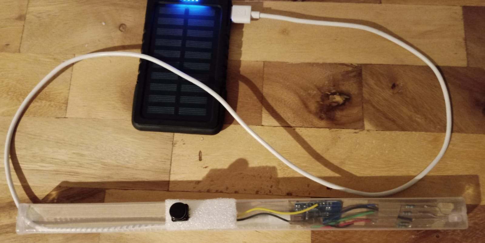

This blog post is part of a series of posts on my attempt to build an electronic magic wand. Click here to view all the posts.
After many weeks of procrastinating reading research papers on DTW, and procrastinating writing any DTW code, and procrastinating making any progress at all on the wand, I finally found time to work on it over the long Easter weekend.
Middleman
I had planned to read up on all the known optimizations for DTW and implement the algorithm in the most efficient way to run on my ESP8266 microcontroller. This was a far-fetched goal :p. I did read many research papers, but couldn’t inspire myself to brainstorm and write the code in Arduino C++ to run with the meagre 40KB RAM available to me. In the end, I just did something lazy: add a middleman.
In my original plan, the wand was supposed to collect the sensor readings, run pattern recognition to determine the spell being cast, and make network requests based on the spell. This is too much work for a wand with silicon as its core, instead of unicorn hair, dragon heartstring or phoenix feather. I changed the plan to:
- The wand collects sensor data and sends it over the network to a middleman.
- The middleman does fancy pattern matching on the sensor data, determines the spell, and makes any further network requests to carry out the effects of the spell.
- The “actors” of the spell receive the commands from the middleman and act accordingly.
Further, now that I am using a middleman, I am no longer bound by the 80MHz clock of the ESP8266. I could write O(N^2) DTW code and run it on my 4.5GHz laptop!
Spell Matching
I quickly implemented a naive O(N^2) time and O(N) space complexity DTW algorithm, and was ready to match spells. To be able to compare distances across spells, I need them to be standardized, which I do as follows:
- All the 6 measurements (
aX,aY,aZ,gX,gY,gZ) are scaled to be between -1 and +1. - Each spell is interpolated to have 128 time points.
I had already collected a ton of data for various spells (referenced in previous blog posts). I decided to use a simple K Nearest Neighbours algorithm to categorize a new spell. So the process works as follows:
- I cast a spell with my wand (“incoming spell”). The wand sends it to the middleman.
- The middleman “standardizes” the incoming spell and calculates the DTW distance of the incoming spell with all the (already “standardized”) spells in its database.
- It picks
K(I useK = 10) spells from the database with the lowest DTW distance as “voters”. - It categorizes the incoming spell as the one with the highest votes.
And this worked extremely well. Except that it doesn’t handle garbage data (as it still assigns some category to garbage data). So I added the following constraints:
- To count as a “voter”, a spell needs its DTW distance with the incoming spell to be less than a
maxDistancethreshold (I usemaxDistance = 100). This means that there can be less thanKvoters for an incoming spell. - For the incoming spell to be assigned a category in the known spells, the category needs to receive at least
minVotesvotes (I useminVotes = 5).
For my data, my parameterization of K = 10, maxDistance = 100 and minVotes = 5 works pretty well. Most incoming spells are categorized with a decisive 10 votes. Garbage data never gets 5 votes, so it remains unassigned.
Spell Actions
Now that I can recognize spells from my wand, I need “actors” to perform actions when the wand commands so. I have the following simple actions:
- Lumos: Turns on an LED at the tip of my wand
- Vermillious: Turns on the LED at the tip of my wand, but now in red colour
- Verdimillious: Turns on the LED at the tip of my wand, but now in green colour
- Nox: Turns off the LED
- Cantis: Turns on music on my laptop
- Silencio: Stops the music
Admittedly, these are not particularly fascinating effects. I needed something better. So I unscrewed a 4-socket extension cord and connected the sockets to a 4-channel relay module. I then connected the relay module to a spare ESP8266 to listen for commands over the Wifi network, and turn the sockets on/off based on the commands. This enabled me to control larger appliances with my wand. I added the following spells:
- Lumos Maxima: Turns on a real, huge, bright lamp in my study room. (Nox turns this off as well)
- Ventus: Turns on a fan in my study room.
- Finite: Turns off the fan.
Here’s a gif of me using Lumox Maxima and Nox:

Now, these effects are a bit more interesting, right? I am still looking for ideas to control more things with the wand.
Unsatisfied still
My wand currently looks like this:

There are 2 points that I am still not fully satisfied with:
First, it’s wired to a power bank that I carry in my pocket. Years of technological progress and it’s still hard to find a small baTtery tHAt PrOViDES POWER AT 3.3V OR 5V WHEN THESE ARE THE MOST COMMON INPUT VOLTAGE REQUIREMENTS FOR MICROCONTROLLERS!! I probably need to use a step-up or step-down converter with a battery that fits inside my wand, but it’s sad.
Second, I need to hold the button under by thumb when performing the spell. Though this interaction is almost natural, I don’t really like the button sticking out of the wand. This problem seems quite complicated, because, to not require a button press, I would need live spell recognition:
- I would need to live stream accelerometer data to the middleman. I cannot collect sensor readings when I’m transmitting data, so the transmission needs to either be very fast or somehow be interspersed in between consecutive sensor readings.
- I would need to write an online DTW algorithm to calculate DTW distances over streaming data, that needs to process the data faster than the wand produces it.
- I would need some way to prevent accidentally triggering spells when I’m just moving the wand without the intention of performing any spell, but in the local timeframe the movement seems somewhat similar to some spell.
So I’ll continue to experiment on this problem and will publish updates, if any. Tot ziens!